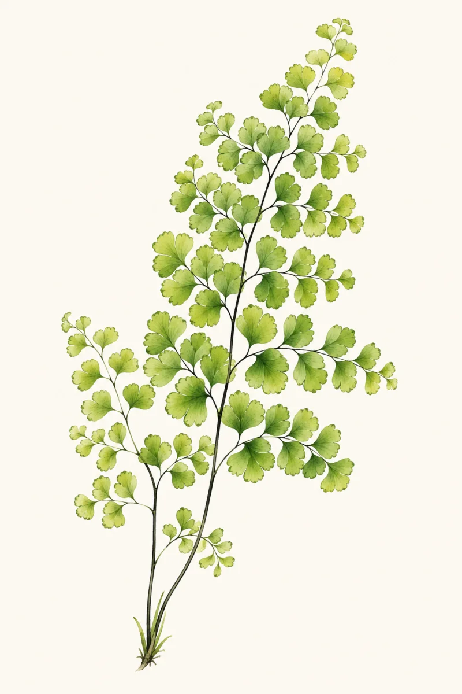

FROM THE FORESTS OF THE AMERICAS
A quiet world,
one frond at a time.
Ancient forms. Extraordinary lives.
Wander through a living collection of ferns,
painted in watercolor and stirred by the wind.
BOTANY MEETS WONDER01 — THE AMERICAS
PLATE I. PTERIDACEAE

Adiantum capillus-venerisSouthern maidenhair fern
A STUDY IN GREEN · NATURAL HISTORYTHE HERBARIUM
Meet the ferns.
Let your curiosity take root.
Touch a frond. Discover its story.
No ferns found. Try another name or place.
There is a whole forest
in the smallest frond.